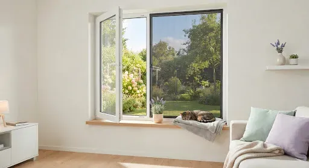
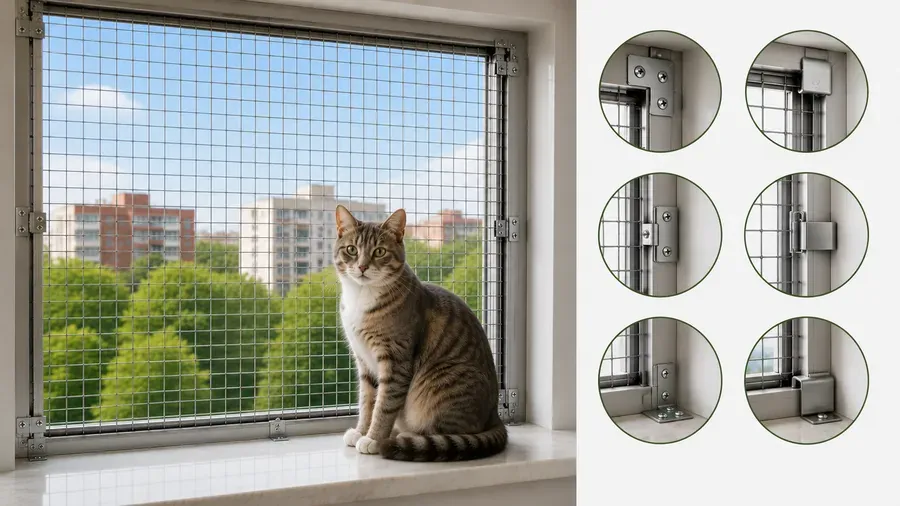
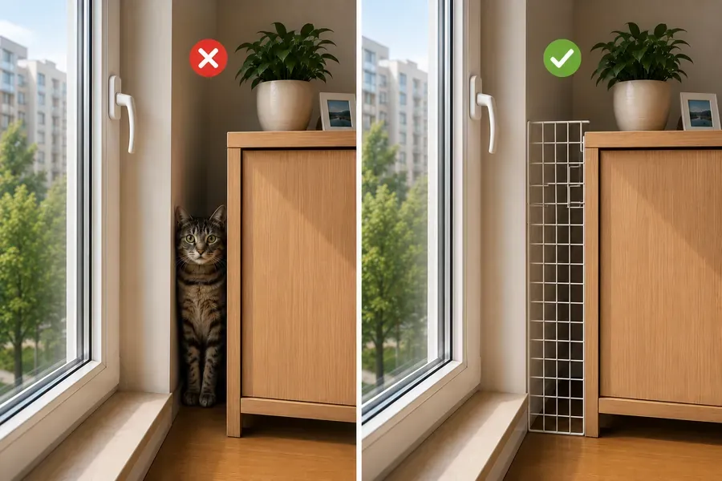
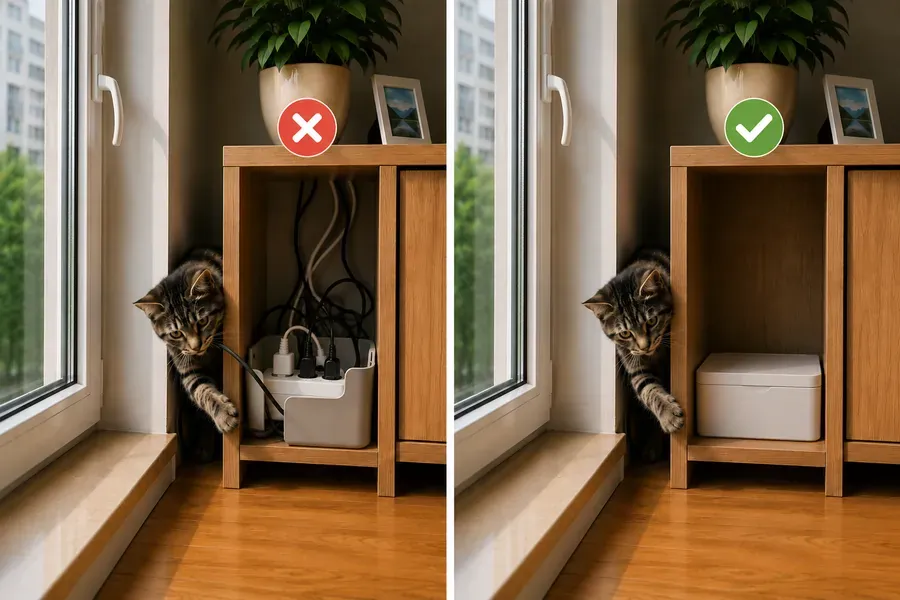
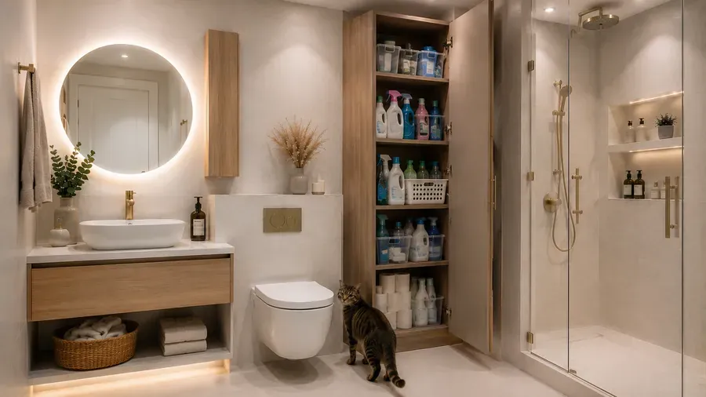
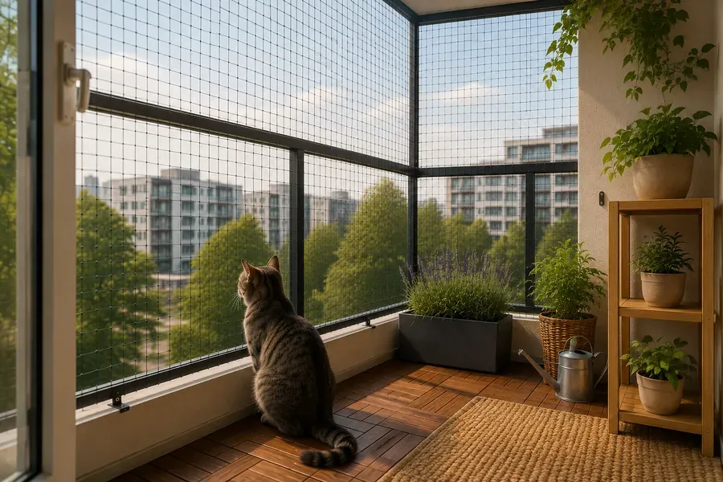
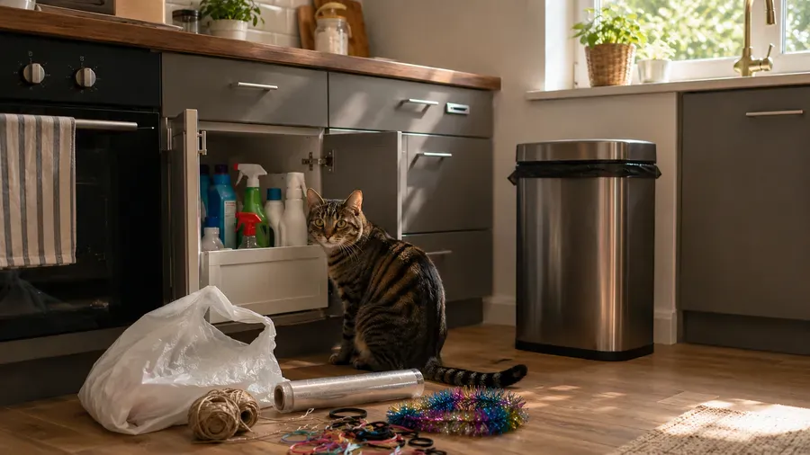

Безпека
Ваш дім — це фортеця для кота. Переконайтеся, що кожен куточок простору безпечний і комфортний.

1Сітки на вікнах
Звичайні москітні сітки не витримають стрибка кота чи його кігтів. А відкриті вікна можуть призвести до застрягання кота або падіння з вікна.
Два основні види сіток для захисту котів:
1) «Сітки-антикіт» — виготовлені з високоміцної сталевої нитки й надійно кріпляться до рами за допомогою металевих кріплень по всьому периметру.
2) Пластикові блокатори для відкритих віконних отворів — їх також називають «захист вертикального провітрювання».

2Захист кутків
Перевірте щілини між меблями та стінами. Коти можуть застрягти у вузьких просторах. Зазвичай це:
- між шафами і стіною;
- за холодильником;
- за пральною машиною;
- між диваном і стіною.
Правило просте: або кіт не повинен мати змоги потрапити в це місце, або повинен мати можливість вийти.

3Електрика
Сховайте дроти в спеціальні кабель-канали. Кошенята люблять гризти шнури, що може призвести до удару струмом, загибелі або опіків слизових оболонок.
Небезпечні місця:
- подовжувачі;
- зарядні пристрої для телефонів;
- кабелі комп'ютерів;
- гірлянди;
- дроти телевізорів.
Допоможе використання спеціальних коробів для дротів, щоб зібрати їх разом і сховати.
Важливо враховувати, що коти можуть гризти дроти через цікавість, запах або реакцію людини. Якщо це сталося — не лякайте кота, не кричіть на нього, а максимально спокійно відверніть його увагу від дротів.

4Важкі меблі
Прикріпіть книжкові полиці й телевізори до стін. Коти — чудові стрибуни, і їхня вага може перекинути незакріплені предмети, що може призвести до травми кота або людей поруч.
Основні предмети, на які варто звернути увагу:
- книжкові шафи;
- комоди;
- стелажі;
- телевізори;
- настінні полиці;
- вінні шафи.
5Побутова хімія
Обережно
Будь-яка побутова хімія небезпечна для тварин. Сюди належать засоби для:
- миття скла;
- миття ванної;
- миття підлоги;
- миття посуду тощо.
Навіть якщо засіб потрапить на шерсть, кіт злиже його, і той потрапить у внутрішні органи. Тримайте всі засоби подалі від зон активності кота, за зачиненими шафами й дверцятами.
Особливо небезпечні: відбілювачі, засоби для чищення труб, засіб для духовки, таблетки для посудомийної машини, капсули для прання, концентрати.

6Балкон
Можливість гуляти на свіжому повітрі — важлива частина життя тварини. Але балкон, окрім свіжого повітря й сонця, може приховувати небезпеку.
Головне й перше правило — наявність спеціальних сіток по всьому периметру балкона. Додатково потрібно прибрати всі технічні отвори: коти допитливі й будуть пхати ніс усюди, де можна.

7Додаткові пункти
Кухня:
- гаряча варильна поверхня;
- ножі;
- відкрита духовка;
- сміттєве відро.
Санвузол:
- закрита кришка унітаза;
- пральну машину завжди перевіряють перед запуском;
- зачинені шафи;
- зберігання таблеток і капсул.
Свічки та ароматизатори:
- ефірні олії;
- дифузори;
- пахощі;
- свічки.
Пакети та плівки:
- поліетиленові пакети;
- пакувальна плівка;
- стретч-плівка.
Нитки та гумки:
- нитки;
- муліне;
- гумки;
- гумки для волосся.

Ще в розділі
Інформацію в застосунку зібрано з відкритих джерел і досвіду власників котів. Вона не замінює консультацію та огляд у ветеринара. Рішення щодо здоров'я та догляду за улюбленцем ухвалює власник — у разі будь-яких сумнівів звернися до ветеринара.
Усе це є в застосунку Cat First
Статті, чек-листи й перша допомога — у телефоні, навіть без інтернету.